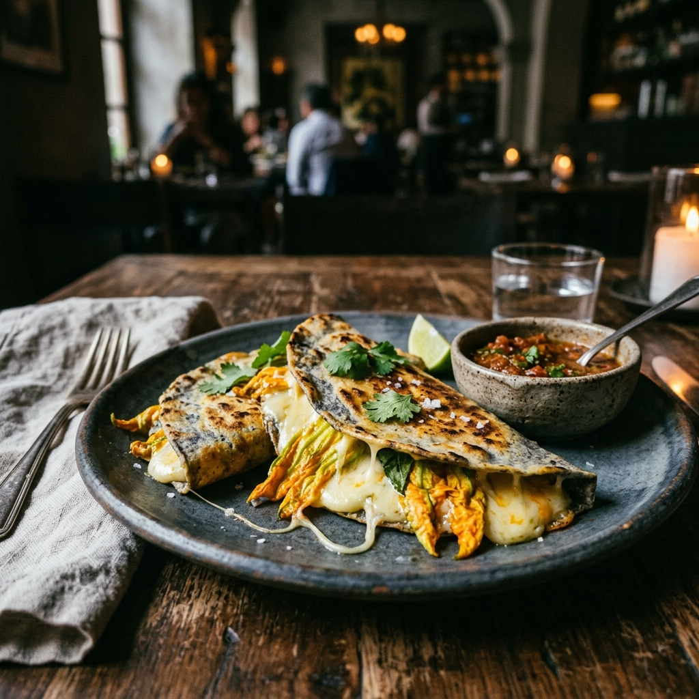
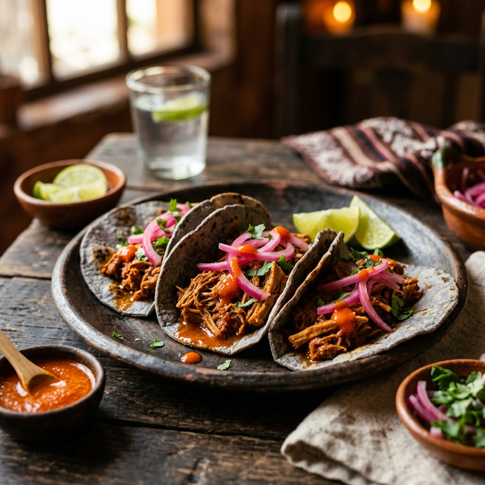
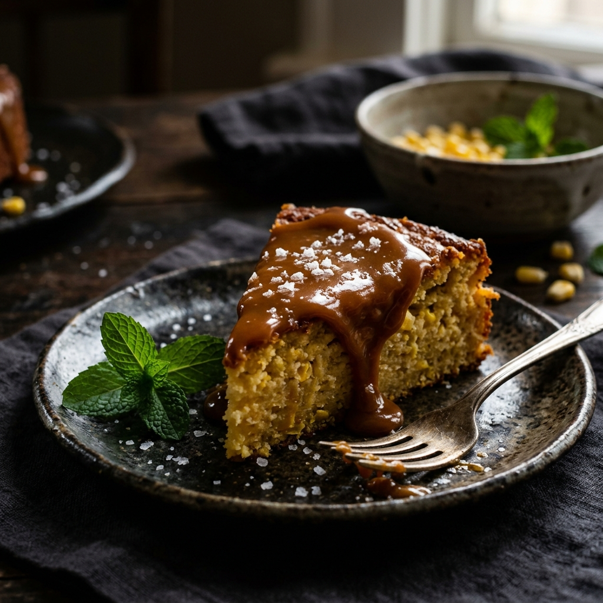
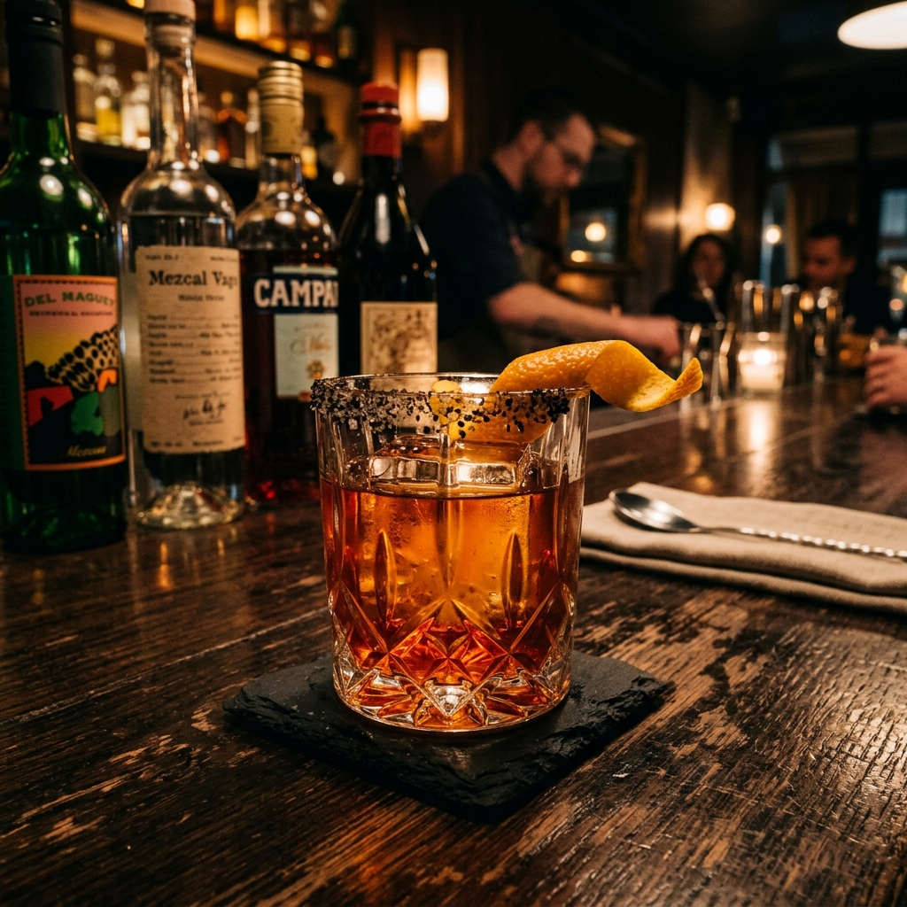

Quesadillas de Flor de Calabaza
Ručně vyráběné kukuřičné placky plněné rozpuštěným sýrem Oaxaca, křehkými květy tykve, česnekem a epazote. Tradiční pochoutka ze srdce centrálního Mexika podávaná s čerstvou salsou.
Předkrmy
5 pokrmů-
185 Kč
Nachos Supreme
VČerstvě smažené tortillové chipsy s rozpuštěným sýrem Monterey Jack, jalapeños, pico de gallo, smetanou a domácím guacamole.
-
175 Kč
Quesadillas de Queso
VZlatavě opečené pšeničné tortilly plněné směsí Oaxaca a Chihuahua sýrů. Podávané s pico de gallo, guacamole a chipotle salsou.
-
155 Kč
Guacamole Tradicional
VMleto přímo u stolu v sopečném molcajete z avokád Hass, čerstvé limetky, koriandru, bílé cibule a jalapeña. S čerstvě smaženými chipsy.
-
125 Kč
Elotes — Pečená kukuřice
VPečená kukuřice potřená majonézou, posypaná cotija sýrem, chilli práškem a čerstvou limetkou — oblíbená mexická pouliční pochoutka.
-
145 Kč
Sopa de Tortilla
VTradiční polévka z pečených tomátů, chipotle chilli a česneku, ozdobená křupavými tortillovými proužky, avokádem a queso fresco.

Tacos de Cochinita Pibil
Pomalu pečené vepřové plecko marinované v achiote a citrusové šťávě, tradičně připravované v banánových listech. Podávané s nakládanou červenou cibulí a habanero salsou na domácích tortillách.
Tacos
5 druhů · 2 ks-
185 Kč
Tacos Al Pastor
Pomalu pečené marinované vepřové na vertikálním trompu, s čerstvým ananasem, koriandrem a domácí salsou verde na ručně vyráběných kukuřičných tortillách.
-
195 Kč
Tacos de Barbacoa
Hovězí líčka dušená po celý den s guajillo a ancho chilli, česnekem a oreganem. S bílou cibulí, koriandrem a salsou roja.
-
185 Kč
Tacos de Carnitas
Vepřové maso pomalu konfitované v loji se citrusovou kůrou a skořicí dokud není zlatavé a křupavé. S cibulí, koriandrem a limetkovými klínky.
-
215 Kč
Tacos de Camarones
Grilované tygří krevety marinované v chilli de árbol, česneku a limetce, podávané s kapustovým salátem, mango salsou a chipotle crémou.
-
165 Kč
Tacos de Verduras
VSezonní zelenina pečená na grilu — cuketa, paprika a houby portobello — s černými fazolemi, avokádem a salsa verde. Veganská možnost.

Mole Amarillo con Pato
Konfitované kachní stehno v tradičním žlutém mole z Oaxacy — chilhuacle amarillo, tomatillos, čerstvé bylinky a epazote. Podávané s tamalito z listů banánovníku a černou rýží.
Hlavní chody
5 pokrmů-
325 Kč
Enchiladas Mole Negro
Kuřecí enchiladas zalité legendární omáčkou mole negro ze 32 ingrediencí, tmavé čokolády a rodových koření. Smetana a queso fresco navrchu.
-
345 Kč
Fajitas Mixtas
Grilovaný skirt steak, kuřecí prsa a krevety s restovanou cibulí a paprikou na syčícím pánvi. S tortillami, guacamole, smetanou a čerstvou salsou.
-
295 Kč
Chile Relleno
VPoblano chilli plněné ricottou, černými fazolemi a queso fresco, obalené ve vzdušném vajíčkovém těstíčku, smažené dozlatova a přelité ranchera salsou.
-
365 Kč
Carne Asada
Prvotřídní skirt steak marinovaný přes noc v citrusech, česneku a bylinkách. Grilovaný na mesquite, podávaný s grilovanou jarní cibulkou, guacamole a teplými pšeničnými tortillami.
-
285 Kč
Pozole Rojo
Tradiční kukuřičný guláš s pomalu dušeným vepřovým masem v bohatém vývaru z červeného chilli. Se strouhaným zelím, ředkvičkou, oreganem a čerstvou limetkou.

Pastel de Elote con Cajeta
Jemný dort z čerstvé kukuřice s ricottou, citronovou kůrou a mátou, přelitý domácím karamelem cajeta z kozího mléka a posypaný vločkami mořské soli. Sladko-slaná dokonalost.
Dezerty
3 dezerty-
145 Kč
Churros con Chocolate
Zlatavé, křupavé churros obalené ve skořicovém cukru, podávané s bohatou oaxackou horkou čokoládovou omáčkou a domácím vanilkovým karamelem cajeta.
-
155 Kč
Tres Leches
Jemný piškotový dortíček nasáklý trojicí mléka — plnotučným, kondenzovaným a smetanou — zdobený šlehačkou a čerstvými lesními plody.
-
135 Kč
Flan de Vainilla
Klasický mexický karamelový pudink z vanilky madagaskarského původu, pomalu pečený ve vodní lázni. Podávaný s karamelovou omáčkou a čerstvou mátou.

Mezcal Negroni Especial
Artisanal Negroni s Banhez Mezcalem, Campari, sweet vermouth a kapkou mole bitters. Uzená sůl na okraji sklenic a ozdoba z pomerančové kůry. Sofistikovaný a nezapomenutelný.
Nápoje
Bar & Nealkohol.Tequila & Mezcal
Tequila Flight — Blanco
Ochutnávka tří prémiových blanco tequil (3 × 40 ml): Patrón Silver, Herradura Plata, Espolòn Blanco. S limetkou a sůlí.
Tequila Flight — Añejo
Stařené ušlechtilé tequily (3 × 40 ml): Don Julio Añejo, Clase Azul Reposado, El Tesoro Añejo. Pro skutečné znalce.
Koktejly
Margarita Clásica
Patrón Silver, čerstvá limetková šťáva, Cointreau, agávový nektar. Na skleničce sůl s chilli. On the rocks nebo zmražená.
Margarita de Mango
Čerstvé mangové pyré, Espolòn Blanco, čerstvá limetka, chilli tinktura a slaný okraj. Tropická a osvěžující.
Paloma
Tequila Reposado, čerstvá grapefruitová šťáva, limetka, sůl a grepová limonáda. Lehký mexický klasik.
Aguas Frescas & Nealko
Horchata
VTradiční rýžový nápoj s mandlemi, skořicí a vanilkou. Jemně nasládlý a osvěžující — ideální k pálivým jídlům.
Agua de Jamaica
VChladný louh ze sušených kvítků ibišku s třtinovým cukrem a limetkou. Rubínově červený a přirozeně antioxidantový.
Agua de Tamarindo
VKyselkavě-sladký nápoj z tamarindové pasty, třtinového cukru a limetky. Oblíbená mexická limonáda s výraznou chutí.
Café de Olla
VTradiční mexická káva vařená v hliněném hrnci se skořicí, piloncillo a hřebíčkem. Voňavá, hřejivá a plná chuti.